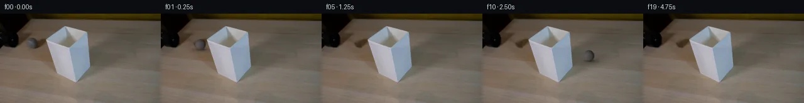

![首帧]()

Round 00
2026-11-05T16:18:53.340129+00:00像素候选变化代码 +238/−0inspection 更新
pixels 71540927259133f9 · code 7c0d11f74710a590
查看本轮 generate.py 真实 diff
--- previous/generate.py
+++ current/generate.py
@@ -0,0 +1,238 @@
+"""Generate the continuation from local source pixels and analytic geometry.
+No external scene inputs, image models, or rendering engines are used.
+"""
+from pathlib import Path
+import json
+import numpy as np
+from PIL import Image, ImageDraw
+import cv2
+from scipy.ndimage import gaussian_filter, map_coordinates
+from artifact_io import save
+
+ROOT = Path(__file__).resolve().parent
+W, H, N = 256, 144, 20
+FPS = 4
+SOURCE = np.asarray(Image.open(ROOT / 'first_frame.png').convert('RGB'))
+Y, X = np.indices((H, W), dtype=np.float64)
+CX0, CY0, R0 = 50.8, 47.3, 8.5
+END_X = 274.8
+SLOPE = 0.17
+SHADE_VERTICES = [(73, 42), (104, 20), (138, 30), (143, 84), (120, 111), (91, 96)]
+
+
+def clean_background():
+ # Remove the original sphere and its immediate contact/cast shadow. The
+ # surrounding wood, black tube, and lampshade are retained as source pixels.
+ disk = ((X - 51.0) / 10.1)**2 + ((Y - 47.4) / 10.0)**2
+ shadow = ((X - 55.5) / 9.0)**2 + ((Y - 55.0) / 4.0)**2
+ hole = (disk <= 1.0) | (shadow <= 1.0)
+ filled = cv2.inpaint(SOURCE, hole.astype(np.uint8) * 255, 4, cv2.INPAINT_NS)
+ # Restore fine wood variation within the hole using a nearby, clean strip
+ # from the same image. Boundary taper prevents a rectangular donor edge.
+ residual = SOURCE.astype(float) - gaussian_filter(SOURCE.astype(float), (1.2, 1.2, 0))
+ donor = map_coordinates(residual.mean(axis=2), [Y, np.maximum(X - 22, 0)], order=1, mode='nearest')
+ taper = np.clip(cv2.distanceTransform(hole.astype(np.uint8), cv2.DIST_L2, 5) / 3.0, 0, 1)
+ result = filled.astype(float) + (donor * taper * 0.5)[..., None]
+ result[~hole] = SOURCE[~hole]
+ return np.clip(result, 0, 255), hole
+
+
+def calibrate_sphere():
+ u, v = (X - CX0) / R0, (Y - CY0) / R0
+ rr = u*u + v*v
+ z = np.sqrt(np.maximum(0, 1 - rr))
+ interior = rr < 0.70
+ normals = np.stack([np.ones(interior.sum()), u[interior], v[interior], z[interior]], axis=-1)
+ coefficients = np.linalg.lstsq(normals, SOURCE[interior].astype(float), rcond=None)[0]
+ model = coefficients[0] + u[..., None]*coefficients[1] + v[..., None]*coefficients[2] + z[..., None]*coefficients[3]
+ residual = (SOURCE.astype(float) - model).mean(axis=2)
+ residual *= np.clip((0.85 - rr) / 0.25, 0, 1)
+ residual = gaussian_filter(residual, 0.45)
+ return coefficients, residual
+
+
+BACKGROUND, ERASE_MASK = clean_background()
+COEFFICIENTS, SOURCE_RESIDUAL = calibrate_sphere()
+SCALE = 4
+hi_mask = Image.new('L', (W*SCALE, H*SCALE), 0)
+ImageDraw.Draw(hi_mask).polygon([(x*SCALE, y*SCALE) for x, y in SHADE_VERTICES], fill=255)
+SHADE_MASK = np.asarray(hi_mask.resize((W, H), Image.Resampling.LANCZOS), dtype=float)/255
+# Preserve every source pixel in the actual shade interior exactly. Fractional
+# boundary coverage is used only for the very small antialiasing fringe.
+SHADE_MASK = np.where(SHADE_MASK > .96, 1.0, SHADE_MASK)
+GROUND_NORMAL = np.array([0.0, -0.72, np.sqrt(1 - 0.72**2)])
+DIRECTION = np.array([1.0, SLOPE, SLOPE*0.72/GROUND_NORMAL[2]])
+DIRECTION /= np.linalg.norm(DIRECTION)
+ROLL_AXIS = np.cross(GROUND_NORMAL, DIRECTION)
+ROLL_AXIS /= np.linalg.norm(ROLL_AXIS)
+
+
+def state(frame, offset=0.0):
+ fraction = (frame + offset)/19.0
+ cx = CX0 + (END_X - CX0)*fraction
+ cy = CY0 + SLOPE*(cx - CX0)
+ radius = R0*(1 + .10*fraction)
+ # Integrate rolling displacement / radius for the slow perspective growth.
+ # This gives a continuous surface rotation without frame-wise reseeding.
+ path_length = (cx - CX0)*np.sqrt(1 + SLOPE*SLOPE)
+ growth_per_pixel = .10 / ((END_X - CX0)*np.sqrt(1 + SLOPE*SLOPE))
+ angle = np.log1p(growth_per_pixel*path_length)/(R0*growth_per_pixel)
+ return cx, cy, radius, angle
+
+
+def rotate_texture(normals, angle):
+ a = ROLL_AXIS
+ cos, sin = np.cos(-angle), np.sin(-angle)
+ return normals*cos + np.cross(a, normals)*sin + np.sum(normals*a, axis=-1)[..., None]*a*(1-cos)
+
… diff truncated; 151 more lines …